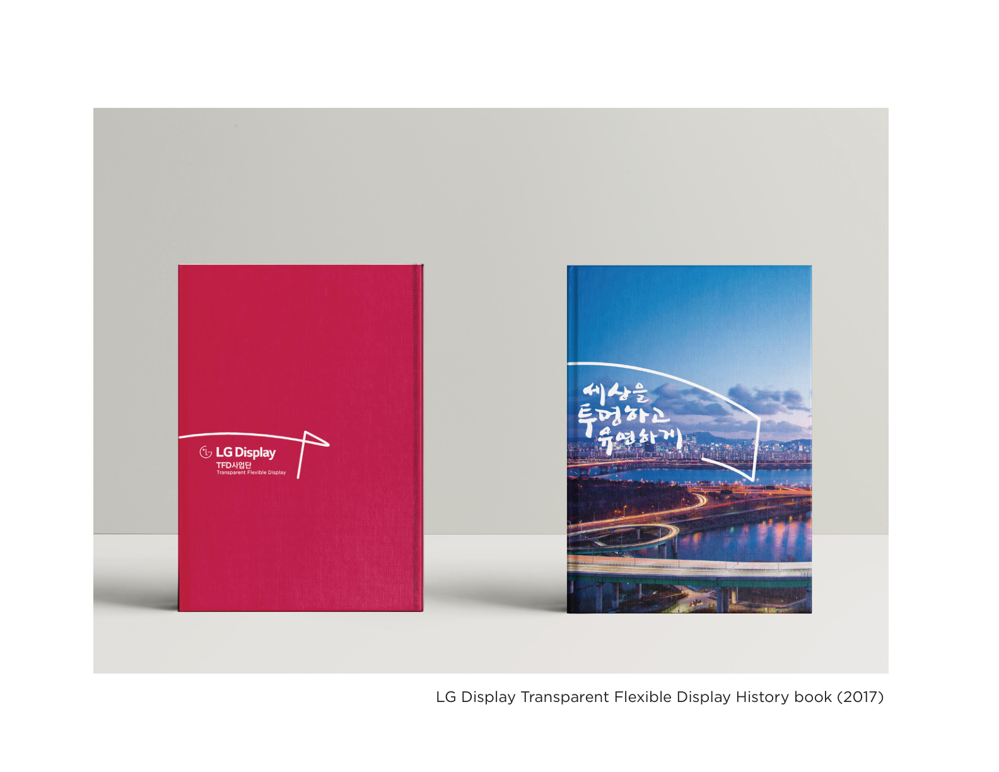
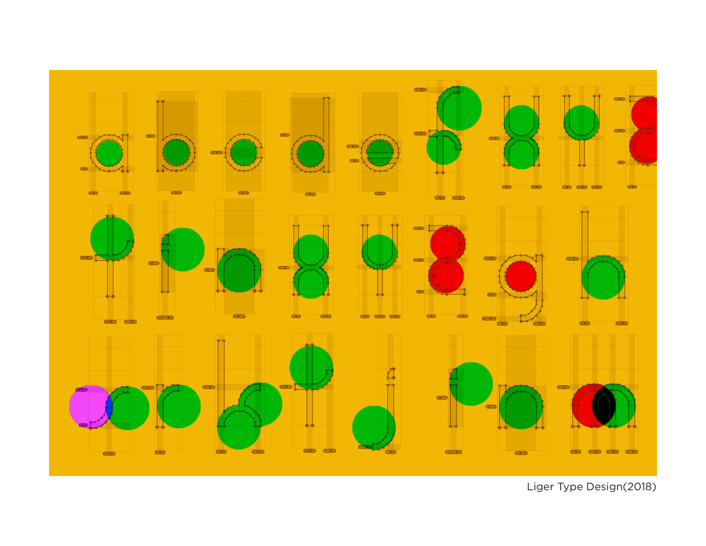
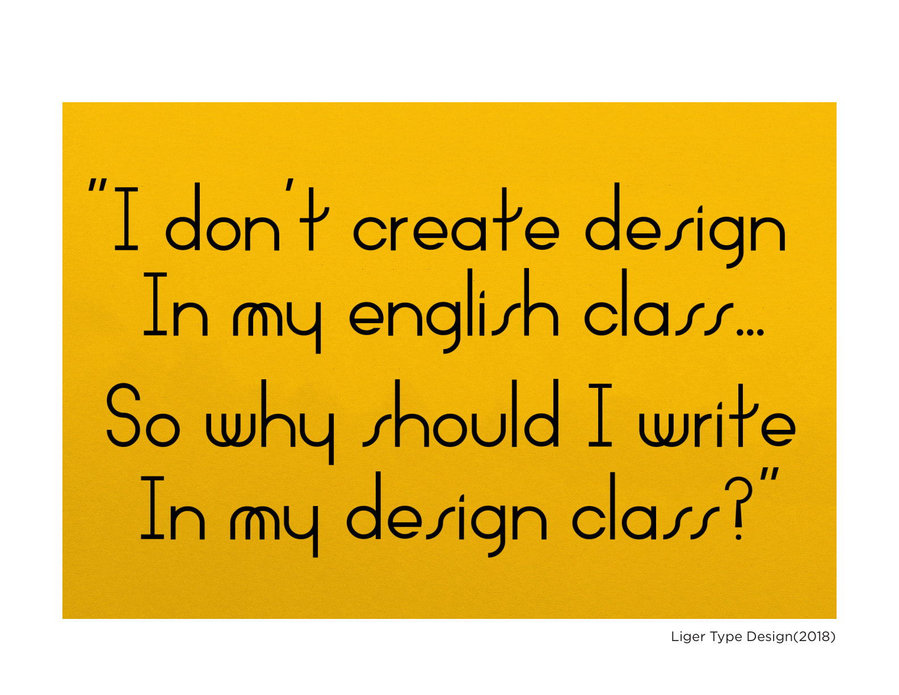
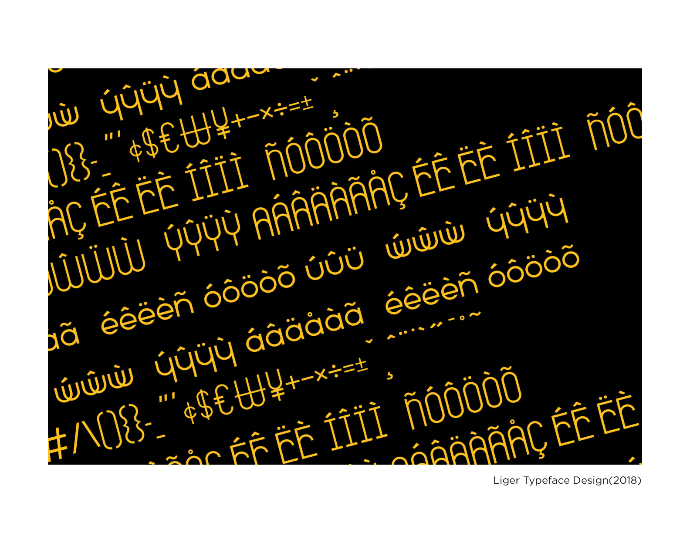
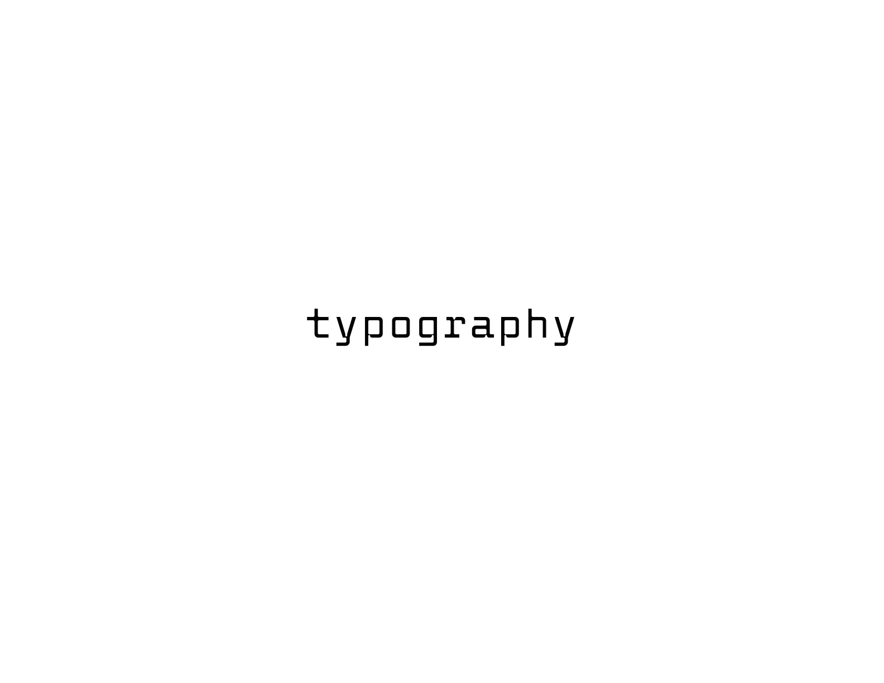
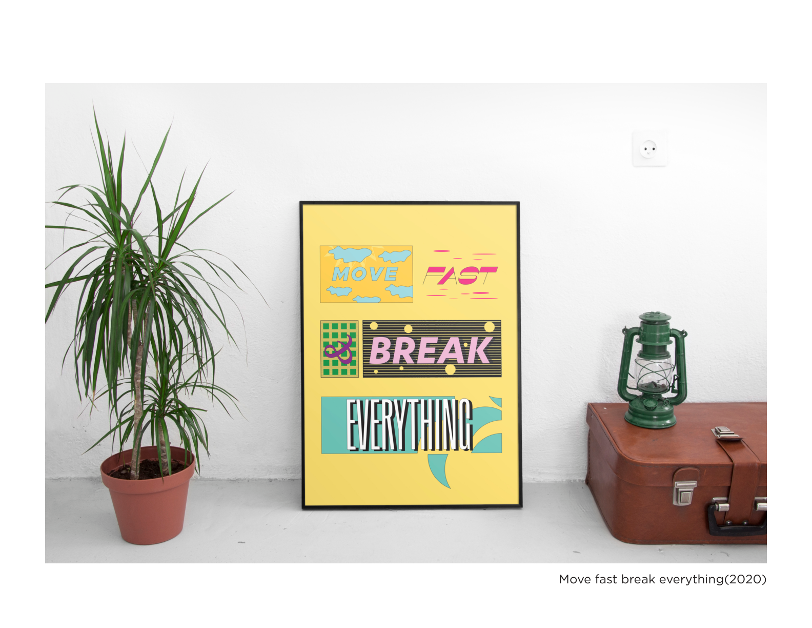

Most typefaces begin with tradition and refine it. Liger started with a voice and built the letters to carry it. Designed from first principles — no templates, no historical references as a crutch — the typeface has a complete glyph set with international character support. It was built to own a space. No other typeface sounds like this one.
Full type specimen — glyph set, weight studies, and the typeface set in context.




Typography across print, editorial, and brand contexts — from publication design to display work.


Liger is the foundation of a complete visual language — built not to imitate existing typefaces but to define its own territory. Typography at this level is a commitment: every decision (stroke weight, aperture, x-height) carries design intent. The result is a typeface that can't be confused for anything else.